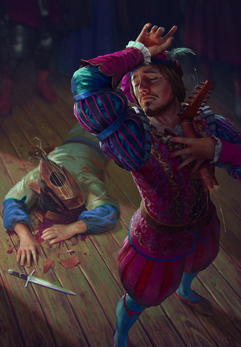

System Reference Document (SRD 5.1) — это справочник по пятой редакции Dungeons and Dragons, распространяемый по Открытой игровой лицензии. Другими словами, это бесплатные правила для D&D 5e на русском языке, собранные из трёх основных книг:
Книги игрока, Руководства мастера и Справочника по монстрам.
Открытая игровая лицензия (OGL) позволяет не только распространять эти правила бесплатно, но и создавать на их основе собственнный контент.
Кроме того, это удобный справочный ресурс, когда нужно быстро освежить в памяти правила верхового боя или узнать рыночную стоимость козы.
Перевод ещё не закончен, поэтому пока не доступны некоторые разделы. Но рано или поздно контент будет полностью соответствовать английской версии и включать различные удобства вроде поиска и других упрощающих жизнь решений.
Обо всех изменениях и фичах вы можете узнать в судовом журнале и в наших соцсетях: ВК и Telegram (подпишитесь, чтобы ничего не пропустить).
Описание
Неважно, кем является бард: учёным, скальдом или проходимцем; он плетёт магию из слов и музыки, вдохновляя союзников, деморализуя противников, манипулируя сознанием, создавая иллюзии, и даже исцеляя раны.
Музыка и магия. В мирах D&D слова и музыка это не просто колебания воздуха, тут они содержат в себе силу. И бард является мастером речей, песен, и волшебства, заложенного в них. Барды говорят, что вся мультивселенная была вызвана к существованию и сформирована словами, которые произнесли боги. И отражения этих первородных Слов Творения до сих пор звучат в космосе. Музыка бардов это попытка уловить эти отзвуки и тонко вплести их в свои заклинания.
Наиболее сильной чертой бардов является их исключительная разносторонность. Многие барды предпочитают держаться не на передовой в бою, используя свою магию для вдохновения союзников и препятствования противникам на расстоянии. Но барды способны защищать себя и в ближнем бою, при необходимости используя магию для укрепления своих клинков и доспехов. Их заклинания чаще предназначены для очарования и создания иллюзий, а не для создания явных разрушений. Они обладают обширными знаниями во множестве тематик и естественные способности, которые позволяют им делать хорошо практически всё. Барды становятся мастерами в тех талантах, к которым стремятся их умы, оттачивая их до совершенства, от музыкальных выступлений до эзотерических знаний.
Обучение на опыте. Истинные барды не являются обыденной вещью в мире. Не каждый менестрель, поющий в таверне, или шут, скачущий при королевском дворе, является бардом. Чтобы обнаружить скрытую в музыке магию, требуется тяжёлое обучение и некоторая степень природного таланта, чего большинству трубадуров и жонглёров недостаёт. Однако, определить разницу между этими исполнителями может быть трудно. Жизнь барда проходит в странствиях по землям и посвящена сбору знаний, повествованию историй, и существованию за счёт благодарности публики, как и у любого другого артиста. Но глубина знаний, уровень музыкального мастерства и связь с магией ставит бардов на другую ступень от их собратьев.
Барды редко селятся надолго в одном месте, и их естественная тяга к странствиям связана с поиском новых сказаний, обучением новым навыкам и открытию новых горизонтов, что делает карьеру искателя приключений для них естественным призванием. Каждое приключение — это возможность чему-то научиться, попрактиковать разные навыки, проникнуть в давно заброшенные гробницы, обнаружить утраченные произведения магии, расшифровать старые фолианты, пройтись по незнакомым местам, или столкнуться с экзотическими существами. Барды любят сопровождать героев, чтобы засвидетельствовать их свершения из первых рук.
Бард, который может рассказать впечатляющую историю из личного опыта, зарабаты-
вает известность среди других бардов. Более того, после повествования такого большого количества историй о великих свершениях героев, многие барды принимают их близко к сердцу и хотят принять роль героя сами.
Создание
Создание барда. Барды процветают за счет историй, не важно, правдивы они или нет. Ваша предыстория и мотивы не так важны, как истории, что ваш персонаж рассказывает о себе. Возможно, у вас было безопасное и ничем не примечательное детство. В нём нет хороших историй, чтобы поведать о них, но вы можете изобразить себя сиротой, воспитанным ведьмой на зловещем болоте. Или ваше детство действительно может быть достойным истории. Некоторые барды приобретают свою волшебную музыку необычайными способами, в том числе под влиянием фей или других сверхъестественных существ.
Были ли вы учеником у мастера, следуя за более опытным бардом, пока не начали следовать своему собственному пути? Или посещали коллегию, где вы обучались знаниям бардов и практиковали свою музыкальную магию? Может быть, вы в молодости сбежали из дома, или став сиротой подружились с бродячим бардом, который стал вашим наставником. Или вы могли быть избалованным знатным ребенком, обученным мастером.
Может быть, вы попали в лапы ведьмы, совершив сделку, посулившую вам музыкальный дар вдобавок к вашей жизни и свободе, но какой ценой?
Быстрое создание. Вы можете быстро создать барда, следуя этим рекомендациям.
Во-первых, у вашей Харизмы должно быть наивысшее значение. Следующей по величине характеристикой должна быть Ловкость.
Во-вторых, выберите предысторию «Артист».
В-третьих, получите заговоры злая насмешка и пляшущие огоньки вместе со следующими заклинаниями 1 уровня: волна грома [thunderwave], лечащее слово [healing word], обнаружение магии [detect magic] и очарование личности [charm person].